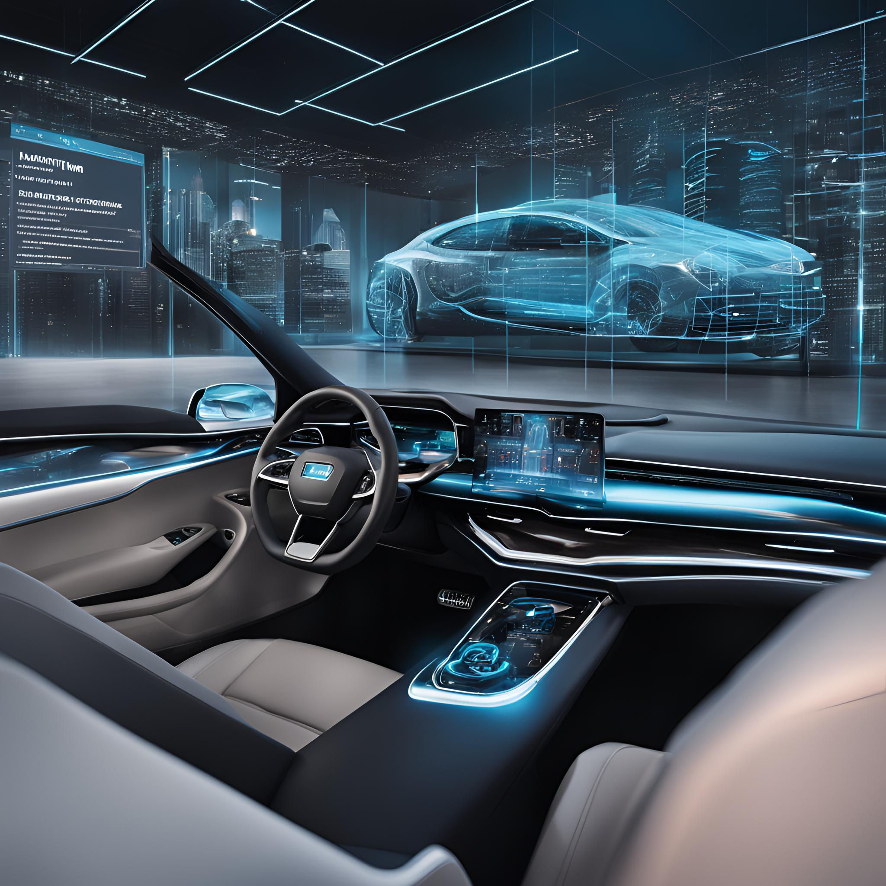

Introducción
¿Imaginas tener una réplica virtual exacta de un objeto físico, desde una turbina eólica hasta una ciudad entera? Los gemelos digitales hacen esto posible. Son modelos virtuales que imitan el comportamiento de sus contrapartes reales, permitiendo optimizar procesos, predecir fallas y tomar decisiones más inteligentes.
Ventajas
- Identificación de cuellos de botella y mejora de la eficiencia operativa.
- Anticipación y prevención de fallas, menor tiempo de inactividad.
- Desarrollo y prueba de nuevos productos y procesos de manera virtual.
- Análisis detallado del rendimiento y predicción de resultados.
- Detección temprana de anomalías y programación de mantenimientos.
Optimización de procesos
Reducción de costos
Innovación
Toma de decisiones basada en datos
Mantenimiento predictivo
Desventajas
- Desarrollo de modelos complejos y adquisición de datos.
- Requiere de conocimientos especializados en modelado, simulación y análisis de datos.
- La precisión del gemelo digital depende de la calidad de los datos recopilados.
- Protección de datos sensibles y confidenciales.